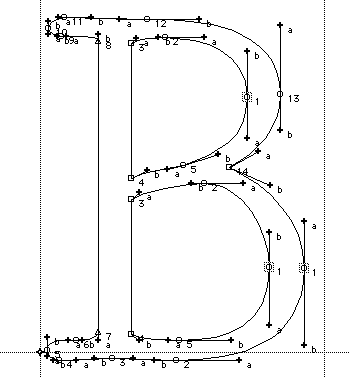
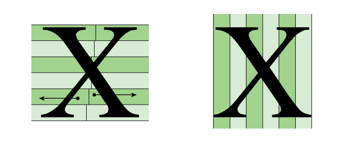

Font rendering on the GPU is a challenging problem that balances quality, performance, and memory efficiency. The Slug Algorithm offers an optimal solution that maximizes quality and requires very little memory. While the GPU compute cost is higher than other algorithms, it is still going to be a fraction of a fraction of the total rendering budget of any serious program, unless you want to use a really wacky font like I dunno this thing, but let's not break the magic just yet.
The goal is to show you how to implement the Slug algorithm in your projects. The reference implementation is an HLSL shader and handles all the GPU-side rendering, but it does not explain how to preprocess your font data. This article walks through the pipeline needed to prepare fonts for the Slug algorithm, with an interactive demo that shows the algorithm in action.
The source code of this demo is available at https://github.com/gabdube/rust-slug-wgpu. This is a demo. The code is not production ready. Code links are included in the article to jump to the referenced source.
This article assumes the reader is familiar with GPU rendering and font basics.
Demo Controls
The interactive demo below allows you to explore the Slug algorithm in action. Here are the available controls:
- Mouse drag - Pan the view horizontally and vertically
- Mouse wheel - Zoom in and out
- Drag and drop .ttf/.otf files - Load new fonts into the demo
- Drag and drop .txt files - Update the displayed text content
- Left/Right arrow keys - Cycle through loaded fonts
- Mouse interaction - Pauses the automatic text scrolling animation
Table of Contents
- Numbers
- What the Shader Actually Needs
- Data structures
- Loading the font face
- Text layout
- Extracting Glyph Outlines
- Spatial indexing
- Sending data to the GPU
- Reading data from the GPU
- Closing words
Acknowledgements
Thanks to Eric Lengyel for creating the Slug algorithm and releasing it into the public domain.
This demo processes the whole bee movie script. Around 49000 characters. On my CPU, an AMD Ryzen 9 9900X, the generation takes 9.5ms cold (starting from an empty font atlas). Using "OpenSans", the resulting font buffer is a nice 69 KB and the text buffer weighs 6.5 MB. The local processing times are displayed in the console, but for convenience click here to show your stats.
Overview
The Slug algorithm renders text directly from curve data on the GPU - no rasterized textures, no atlas packing, no blurriness at scale. But the GPU can't read a TTF file. Everything has to be preprocessed into a GPU-friendly data layout.
Preprocessing is done on the CPU side. The logic is done in slug.rs. The main lib.rs is plumbing to bridge to javascript.
The shader is a WGSL port of the original shader. Both the vertex and fragment shader are combined into slug.wgsl. Note that it does not include the "dynamic dilation" feature from the implementation shader.
The only "interesting" part in demo.ts is how to
send the font data to the GPU and because the font data is in linear memory, this is a simple writeBuffer call.
What the Shader Actually Needs
The fragment shader receives a pixel and has to answer: "is this pixel inside a glyph outline?" To do that efficiently it needs:
- The glyph's outline expressed as quadratic Bézier curves
- A spatial index so it doesn't test every curve - only the ones near the pixel. Slug uses bands.
- Bounding box in font-space (EM units) to map a screen-space pixel into font-space.
Data structures
The reference implementation uses textures to share the font data with the shader, this version uses storage buffers. The main benefit is that the structures on the GPU side will match the ones on the CPU side. Also, with the font data in linear memory, uploading to a storage buffer is a simple memcpy. Note that there might be a small runtime cost from the extra data indirection.
Here's the three core types before diving into how they're built:
-
QuadCurve- slug.rs:13-17: three control points (p0, p1, p2) in font units. All outlines reduce to this. -
SlugGlyph- slug.rs:192-199: per-glyph metadata uploaded to the GPU. Contains:bbox: AABBi16- bounding box in font unitscurves: QuadCurveRanges- start/end index into the global curves arrayhorizontal_bandsandvertical_bands- 8PackedRangeeach, one per band
-
PackedRange- slug.rs:81-99 : a u32 packing a 24-bit offset and 8-bit count. The shader uses this to find which curve indices belong to a band without a separate length field. -
SlugAtlas- slug.rs:452-469 : the in-memory font database. Three parallel arrays -curves,glyphs_curves_indices,glyphshold the processed font data. They map to the bindings in the webgpu shader.
Loading the font face
Entry point: SlugAtlas::from_static_slice
Loading a font face is done using external libraries. The program uses rustybuzz, a Rust port of harfbuzz to handle shaping. Internally, rustybuzz uses ttf-parser to read the font source. Compiling to WASM also requires pure Rust dependencies.
The demo
add_font leaks the font source
so rustybuzz can hold a lifetime-free reference (safe here because fonts are loaded once and live for the app lifetime).
A ShapePlan is precomputed for the language/script/direction combination, shaping is expensive and the plan captures the font's substitution rules so they aren't recomputed per string.
The method returns an empty SlugAtlas. Each font having its own instance. Note that when processing a large number of glyphs, setting a higher initial capacity
will help cut the memory reallocation (128 curves by default is VERY low).
Text layout
Entry point: SlugAtlas::build_slug_string
The build_slug_string takes a rust &str as argument and turns it into a
SlugString, a container that stores the information required to turn the string into a 2D mesh: the glyph positions in screen-space, the glyph positions in font-space,
and the glyph index. Shaping is handled by rustybuzz::shape_with_plan, it returns a list of glyph_id, glyph_position that is used to know which glyph
to process and how to position the text in 2D space.
Slug glyphs are generated on the fly by self.glyph_data(glyph_id), if the glyph ID is not already in processed_glyph_map.
Extracting Glyph Outlines
Entry point: SlugAtlasBuilder::build_glyph
Entry point: SlugAtlasBuilder::build_glyph_curves
build_glyph_curves extracts the glyph outline using ttf-parser outline_glyph.
SlugCurveExtractor implements the functions to parse each type of segment.
Slug only works on quadratic curves, so straight segments (line_to) are turned using
line_to_quadratic
and cubic Bézier lines (curve_to) are turned into two quadratic lines using De Casteljau subdivision.
Extracted curves are stored directly in the atlas, so no memory is allocated unless the capacity of curves is reached.

Perfectly linear segments will cause issues in the shader, so line_to_quadratic moves the control point by an imperceptible amount (LINE_EPSILON).
outline_glyph also returns the bounding box of the glyph in EM.
Spatial indexing
Entry point: SlugAtlasBuilder::build_glyph_bands
Without some kind of spatial indexing, the shader would have to evaluate every curve in a glyph for each pixel. Slug partitions the curves of a glyph in a list of vertical and horizontal bands. The demo hardcodes the number of bands to 8, a sane default for simple fonts (OpenSans stores between 2 and 4 curves per band).

build_glyph_bands tries to not allocate memory. This means the code has to loop twice over the curves, once to count the amount per band, and a second
time to store the indices.
Lastly, the curves are sorted in descending order. By their maximum x component for the horizontal band and their maximum y component for the vertical one.
Sending data to the GPU
Entry point: SlugAtlas::pack_into
pack_into serializes the three arrays into a single contiguous byte buffer with alignment padding between sections.
The function returns a
SlugAtlasPackInfo that holds the offset of the data in the final buffer.
Storage buffers have a minimum alignment that should normally be reported by minStorageBufferOffsetAlignment.
The demo hard-codes it to 256 (the WebGPU safe default) because Firefox reports 32 but then crashes at runtime telling it needs to be aligned to 256 bytes.
(The real minimum alignment of my GPU is 4 bytes according to Vulkan).
On the typescript side
, the application allocates one storage buffer for each font. One device.queue.writeBuffer copies all the glyphs data.
Then a new bind group is created with the offsets of SlugAtlasPackInfo.
Reading data from the GPU
Entry point: vertex_main
The vertex holds the font-space coordinates and the glyph ID. They fit into a single vec2<u32>.
extractBits must be used to preserve the sign when unpacking the font-space coordinates.
Now in the fragment shader, the
fetchCurveIndicesRange function extracts the curves range for the current glyph using the interpolated font-space coordinate.
This is a bit more compute intensive than the reference implementation, but it results in a much "lighter" pixel format (24 bytes vs 48 bytes, excluding the color and jac components).
A small improvement could be to precompute the band_count / size and store the value in the glyph data.
SlugRender then takes the curve indices range and processes the curves. How the algorithm works is out of the scope of this article, but you can find the original paper from the author website: https://sluglibrary.com/.